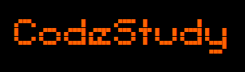

-plataforma de cursos e videos para aprendizado-
SELECIONAR DE CONTEUDO
-
Objetivo
O objetivo do site é facilitar aos alunos do Colegio Arleo barbosa a procura de conteudos para estudar as
materias do curso de informatica caso eles queiram estudar por fora do conteudo escolar
-
Participantes
Kawan Sodré de Oliveira, Danilo dos Anjos, Filipe Gabriel Farias, Bruno Soares Fleck, Lara Souza Costa.
 aulas sobre
html
aulas sobre
html aulas sobre
css
aulas sobre
css aulas sobre
java script
aulas sobre
java script